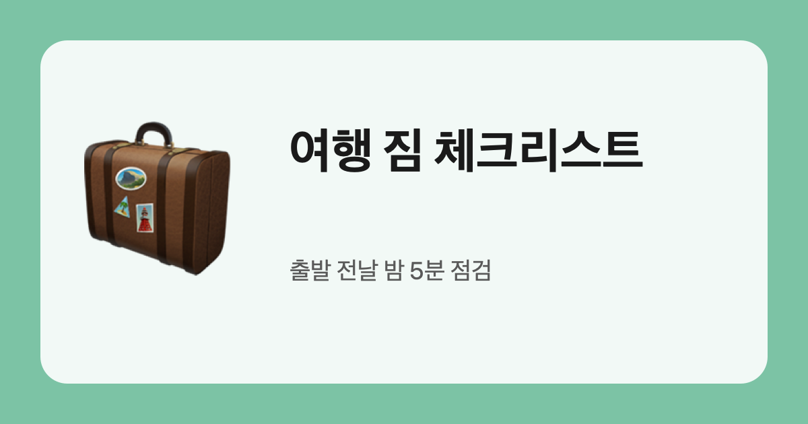

旅行の荷物チェックリスト
出発前の夜、これだけ確認すれば空港であわてません。
持ちましたか？
- パスポート・身分証、航空券と宿の予約画面のスクリーンショット
- スマホの充電器、モバイルバッテリー（機内持ち込み）、変換プラグ
- 常備薬：胃腸薬・痛み止め・絆創膏
- 洗面用具は小さい容器に（機内持ち込みは100ml以下）
- 1日分の着替えは機内バッグに
- 現地で使えるカードと少しの現金
- 折りたたみエコバッグかジッパー袋（お土産・濡れた服用）
荷物を詰め終えたら一度持ち上げてみましょう。重ければまず服を一着減らします。